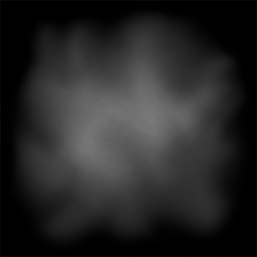
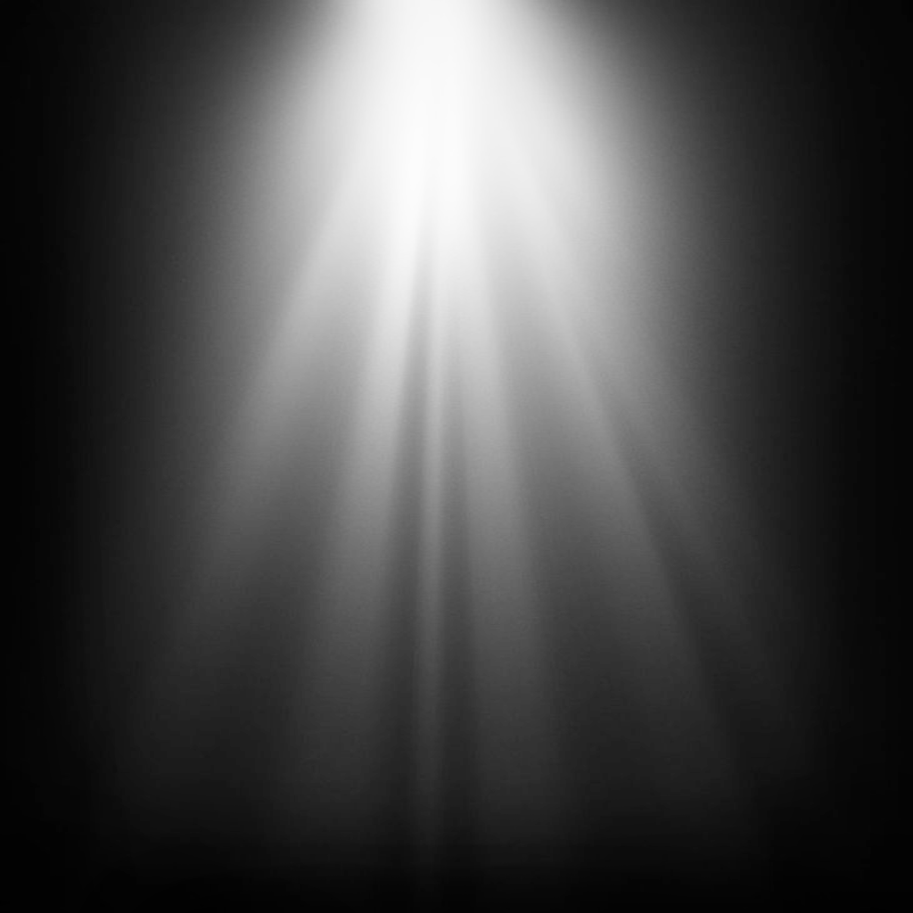

Source
S · foreground
THE GRAPHICS PLAYGROUND
See what happens when two textures meet.
Explore blend modes,
tune the math, and take the code.


Use your own textures: PNG, JPEG, or WebP · up to 20 MB per image.
Preparing your preview…
UNDER THE HOOD
The destination is drawn first. The source is drawn on top. Replace either texture with a PNG, JPEG, or WebP. Transparent PNGs are especially useful. Your files stay in your browser.
Normal uses source alpha for transparency. Additive adds light; multiply darkens. Swap the layers to see why drawing order matters.
Factors scale each color before the equation combines them. Minimum and maximum compare unscaled colors. The code shows separate RGB and alpha settings, plus source opacity.